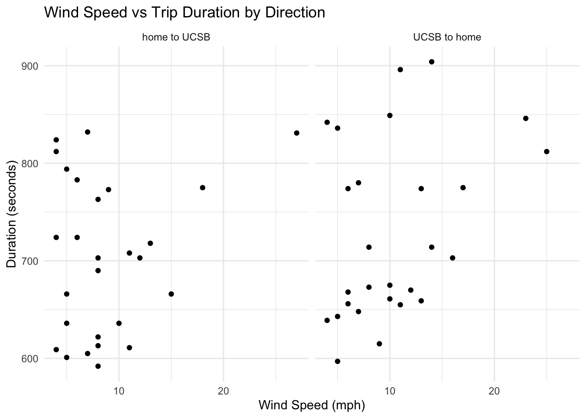

library(tidyverse)
library(janitor)
library(here)
library(readxl)
library(ggeffects)
library(MuMIn) # model selection
library(DHARMa)
library(gtsummary)
library(rstatix)
# reading in data
bike_data <- read.csv(here::here("data/personal_data.csv"))
nest_data <- read.csv(here::here("data/nest_data_final.csv"))ENVS 193DS Final
Set-Up
Problem 1. Research Writing
a. Transparent statistical methods
In part 1, my co-workers used a generalized linear model (GLM) to show if distance to water edge predicts the probability of American Avocet microhabitat use. In part 2, my co-workers used a chi-squared test to see if there was a relationship between bird species and habitat types.
b. Suggestions for rewriting
Part 1
The distance between the habitat and water line was a significant predictor for the American Avocet using the microhabitat or not.
Part 2
The distribution of bird species varied significantly across habitat types (managed pond, non-tidal marsh, salt pond, tidal marsh, and tidal mudflat). Results suggest that the studied bird species (American Avocet, Forster’s Tern, Black-necked Stilt) prefer one habitat over another or may have different habitat uses.
c. Further analysis
Another variable that can influence the probability of American Avocet microhabitat use is native plant cover (continuous variable) in the area of study. It can be measured as percent cover 0–100% by visual estimation within fixed plots. This factor would influence the habitat use as higher native plant cover may reduce the accessible foraging habitat and visibility Americam Avocets need.
Problem 2. Data Analysis
a. Clean and wrangle
# creating new object
nests_clean <- nest_data |>
# creating new columns to store taxonomic names
mutate(ant_species = case_match(
ant_species,
"AB" ~ "Crematogaster sjostedti",
"RRB" ~ "Crematogaster mimosae",
"TP" ~ "Tetraponera penzigi",
"BBR" ~ "Crematogaster nigriceps",
)) |>
# include only certain species (C. mimosae, C. sjostedti, and C. nigriceps)
filter(ant_species %in% c("Crematogaster mimosae",
"Crematogaster sjostedti",
"Crematogaster nigriceps")) |>
# mutating data
mutate(ant_species =
as_factor(ant_species), # data written out as text
ant_species =
fct_relevel(ant_species, # species will be listed in this order
"Crematogaster sjostedti",
"Crematogaster mimosae",
"Crematogaster nigriceps")) |>
# Selecting columns of interest for research questions
select(height_cm, ant_species, case_control)
# Display new data object
str(nests_clean)'data.frame': 270 obs. of 3 variables:
$ height_cm : num 392 310 513 154 324 ...
$ ant_species : Factor w/ 3 levels "Crematogaster sjostedti",..: 2 2 2 2 1 2 3 2 1 3 ...
$ case_control: int 1 0 0 0 0 1 0 0 0 1 ...# Display 10 random rows
slice_sample(nests_clean, n = 10) height_cm ant_species case_control
1 427.0 Crematogaster mimosae 0
2 156.0 Crematogaster sjostedti 0
3 159.0 Crematogaster mimosae 0
4 228.0 Crematogaster mimosae 0
5 300.0 Crematogaster mimosae 0
6 65.0 Crematogaster nigriceps 0
7 207.0 Crematogaster mimosae 0
8 405.5 Crematogaster mimosae 1
9 522.0 Crematogaster mimosae 0
10 183.0 Crematogaster mimosae 0b. Response variable
In a biological context, the 0’s and 1’s represent an outcome occurring (1) or an outcome not occurring (0). In the context of this study, a 1 represents the presence of a nest in a tree and 0 represents the absence of nests on a tree.
c. Purpose of study
Tree height (numerical continuous variable), measured in cm, is one of the main predictors. Determined by the results section in paragraph 2, as tree height increase, the probability of nest occurrence would increase because height can protect the nests from ground predators. Yet, this is also dependent on what ant species are present in the tree, as stated in paragraph 3 of the results section.
As established in paragraph 3 of the results section, the other main predictor is the species of ant, a categorical variable including C. mimosae, C. sjostedti, and C. nigriceps, present in the tree. The following information comes from paragraphs 3 and 4 of the introduction section. Since ants normally prey on nests in acacia trees, it’s usual that nest quantity will be higher in tree with less aggressive ant species like C. sjostedti. Nevertheless, since the acacia ants protect the tree fro, varying nest predators, it’s predicted that the quantity of nests will be higher in trees with more aggressive symbionts like C. mimosea and C. nigriceps.
d. Table of models
| Model number | Ant Species | Tree Height | Interaction? |
|---|---|---|---|
| 1 | X | X | no interaction (+) |
| 2 | X | X | interaction (*) |
e. Run the models
# model 1 (no interaction)
nest_mod1 <- glm(case_control ~ ant_species + height_cm, # no interaction (+)
data = nests_clean, # data from cleaned nest data set
family = "binomial") # binomial data set
# model 2 (interaction)
nest_mod2 <- glm(case_control ~ ant_species * height_cm, # interaction (*)
data = nests_clean, # data from cleaned nest data set
family = "binomial") # binomial data setf. Select the best model
AICc(nest_mod1,
nest_mod2) |>
arrange(AICc) df AICc
nest_mod2 6 238.1236
nest_mod1 4 258.8940As concluded by Akaike’s Information Criterion (AIC), the best model for predicting the probability of bird nest presence is the interaction model between tree height and ant species since it has the lowest AIC.
g. Check the diagnostics
# checking diagnostics using simulated residuals from DHARMa package
plot(
simulateResiduals(nest_mod2)) # using interaction model 2
h. Visualize the model predictions
Generating model predictions
# object for prediction
preds <- ggpredict(
nest_mod2,
# denoting which predictors to use
terms = c("height_cm [74:598 by = 1]", "ant_species")) |>
# renaming columns for figure
rename(height_cm = x,
ant_species = group)Creating figure
# base layer: ggplot
ggplot(data = nests_clean, # data from cleaned nest data
# x-axis: tree height
# y-axis: nest probability
mapping = aes(x = height_cm,
y = case_control)) +
# first layer: individual data points
geom_point(mapping = aes(color = ant_species), # color by ant species
shape = 20) + # shape = small circle
# second layer: trend line based on predictions
geom_line(data = preds,
# x-axis: tree height
# y-axis: probability
# colored by species
mapping = aes(x = height_cm,
y = predicted,
color = ant_species)) +
# third layer: 95% confidence interval ribbon
geom_ribbon(data = preds, # data from model predictions
# x-axis: tree height
# y-axis: probability
# colored by species
mapping = aes(x = height_cm,
y = predicted,
ymin = conf.low,
ymax = conf.high,
fill = ant_species),
alpha = 0.4) + # changing transparency of ribbon
# making one panel for each species
facet_wrap(~ ant_species) +
# customizing colors to categorize by species
scale_color_manual(values = c(
"Crematogaster mimosae" = "#c91a34",
"Crematogaster sjostedti" = "#fa8b14",
"Crematogaster nigriceps" = "#ffc421")) +
# customizing colors to categorize by species
scale_fill_manual(values = c(
"Crematogaster mimosae" = "#c91a34",
"Crematogaster sjostedti" = "#fa8b14",
"Crematogaster nigriceps" = "#ffc421")) +
# labeling x- and y-axis
labs(x = "Tree Height (cm)",
y = "Probability of Bird Nesting In Tree") +
# changing theme from default
theme(panel.background =
element_rect(fill = "transparent", # no panel background
colour = "darkblue", # dark blue outline
linewidth = 1), # width of outline
panel.grid = element_blank(), # taking out grid lines
axis.ticks = element_line(
linewidth = 1), # major tick marks on x- and y-axis
legend.position = "none") # removing legend from panel
i. Write a caption for your figure.
** Figure 1. Probability of bird nest in an acacia tree changes due to varying tree height and ant species.** Plots vary by ant species (seen at top tabs) as well as color (C. sjostedti = orange, C. mimosae = red, C. nigriceps = yellow). The points represent individual nesting observations, the ribbons expanding from the line are 95% confidence intervals, and the trend line represents the models predictions of whether or not a nest is present given the tree height (cm) and ant species. The probability of a bird nest in an acacia tree is either 1 (the presence of a nest(s) in the tree) or 0 (absence of nest(s) in the tree). Data sourced from Lujan, Ema et al. 2023. “Symbiotic acacia ants drive nesting behavior by birds in an African savanna.” Biotropica 55:6. doi: 10.1111/btp.13276.
j. Calculate model predictions
# ggpredict for model predictions at 600cm height only
ggpredict(nest_mod2, # data from prediction model 2
terms = c("height_cm [600]",
"ant_species")) # Predicted probabilities of case_control
ant_species: Crematogaster sjostedti
height_cm | Predicted | 95% CI
----------------------------------
600 | 0.20 | 0.00, 0.99
ant_species: Crematogaster mimosae
height_cm | Predicted | 95% CI
----------------------------------
600 | 0.74 | 0.48, 0.90
ant_species: Crematogaster nigriceps
height_cm | Predicted | 95% CI
----------------------------------
600 | 1.00 | 1.00, 1.00k. Interpret results
The predicted probability of nest occurrence at 600 cm tree height (tallest tree in the data set) for C. sjostedti is 0.2 (95% CI: [0.00, 0.99]), for C. mimosae is 0.74 (95% CI: [0.48, 0.90]), and for C. nigriceps was 1.00 (95% CI: [1.00,1.00]. Tree height has a positive relationship with probability of bird nesting in trees occupied by all three ant species, though the strength and shape of this relationship differed vastly. The relationship was most gradual for C. mimosae, most abrupt for C. nigriceps (which showed a near-threshold response at low heights), and weakest with greatest uncertainty for C. sjostedti. Biologically speaking, more aggressive ant symbionts like C. nigriceps and C. mimosae are known to defend their host tree from nest predators like snakes and raptors. Even beyond aggression, C. nigriceps physically remodels tree growth by pruning apical buds and producing denser canopies. Birds appear to exploit this defensive behavior and extra suitable habitat to reduce nest predation risk.
Problem 3. Affective and exploratory visualizations
a. Comparing visualizations
Differences
My visualization in homework 2 did not show any trend that was recognizable since there were not that many data points, but the next visualization (affective visualization) showed a decent pattern in both trials and trips as there were many more observations to work with. The first scatter plot I made in homework 2 showed that my duration of trip #2 was faster than my trip #1 duration while the affective visualization showed the opposite.
Similarities
It’s hard to find any similarities between the all the visualizations I have because one is a hand-drawn bike and the other are graphs. The only similarity I can find between the two visualizations are the main variables I used as the variables that have the largest effect on my travel duration (minus the addition of stop lights for my affective visualization).
Patterns
The patterns change between visualizations mostly in part because I have many more listed observations in my latter visualization. The pattern in the first visualization showed that my trial #2 had shorter travel durations and that higher windspeeds caused longer durations. The pattern in my affective visualization showed that trial #1 had shorter durations (different than HW2), stronger winds caused a longer duration (the same as HW2) and stop lights also caused a longer duration too (not accounted for in HW2).
Feedback
In week 9 workshop, I got some good and detailed feedback from my peers on my affective visualization. The main thing I took into account was making it more noticeable that I was referencing two completely different trials (the bikes) as well as two different trips (home to ucsb vs. UCSB to home). I made sure that I chose colors that were drastically different from each other to denote the different trials and wrote on each tire which trip was which. Also, my peers mentioned that I should add a shape to the fastest trip in that data set, as well as do something to denote what the longest trip was. For those, I added a star to the tip of the fastest trip shape, and made the longest trip be the only one to touch the inner part of the wheel.
b. Designing an analysis
The analysis that I am choosing to perform for my data set will be a simple linear regression. The specific question I am asking here is what variables cause the largest deviation in my travel duration from home to school and school to home. The response variable in my data set would be my travel duration (continuous quantitative variable) and the predictor variable I am choosing to highlight in this analysis is the wind speed at the time of my trip (continuous quantitative variable). A simple linear regression model would be a fit analysis for my data set because both variables are continuous, the model can explain how much variation in duration is caused by wind speed, and verify if there is a statistically significant relationship between the two variables. Although it won’t be adding to any complexity of the analysis, I am also separating my panels by direction of trip to reduce noise in the upcoming graphs.
c. Check any assumptions and run your analysis
# creating new object for clean data
data_clean <- bike_data |>
# cleaning data names by turning spaces into underscores
clean_names() |>
# only selecting categories of interest
select(duration_mm_ss,
wind_speed_mph,
direction_of_trip) |>
# converting duration to seconds
mutate(duration_sec = as.numeric(ms(duration_mm_ss)))
# splitting by direction
home_to_ucsb <- data_clean |> filter(`direction_of_trip` == "home to UCSB")
ucsb_to_home <- data_clean |> filter(`direction_of_trip` == "UCSB to home")Checking assumptions
Normality test
# defining mm:ss label format
mmss_format <- function(x) sprintf("%d:%02d", x %/% 60, x %% 60)
# first layer: ggplot
ggplot(data_clean,
# x-axis: wind speed
# y-axis: travel duration
aes(x = wind_speed_mph, y = duration_sec)) +
# second layer: data points
geom_point() +
# creating panels for each direction of trip
facet_wrap(~ direction_of_trip) +
labs(
title = "Wind Speed vs Trip Duration by Direction",
x = "Wind Speed (mph)",
y = "Duration (seconds)"
) +
theme_minimal()
Since I only have 27 observation per direction after splitting, slight departures from normality on the QQ plot are pretty expected. Even though normality isn’t precisely clear, I’ve assumed that the data is normally distributed.
Homoscedasticity test
model_home_to_ucsb <- lm(duration_sec ~ wind_speed_mph, data = home_to_ucsb)
summary(model_home_to_ucsb)
Call:
lm(formula = duration_sec ~ wind_speed_mph, data = home_to_ucsb)
Residuals:
Min 1Q Median 3Q Max
-109.895 -76.037 -3.321 64.534 134.673
Coefficients:
Estimate Std. Error t value Pr(>|t|)
(Intercept) 676.759 30.969 21.853 <2e-16 ***
wind_speed_mph 3.142 3.079 1.021 0.317
---
Signif. codes: 0 '***' 0.001 '**' 0.01 '*' 0.05 '.' 0.1 ' ' 1
Residual standard error: 79.64 on 25 degrees of freedom
Multiple R-squared: 0.03999, Adjusted R-squared: 0.001594
F-statistic: 1.042 on 1 and 25 DF, p-value: 0.3172model_ucsb_to_home <- lm(duration_sec ~ wind_speed_mph, data = ucsb_to_home)
summary(model_ucsb_to_home)
Call:
lm(formula = duration_sec ~ wind_speed_mph, data = ucsb_to_home)
Residuals:
Min 1Q Median 3Q Max
-105.69 -60.42 -37.15 55.76 163.12
Coefficients:
Estimate Std. Error t value Pr(>|t|)
(Intercept) 665.874 36.427 18.280 5.58e-16 ***
wind_speed_mph 6.091 3.139 1.941 0.0637 .
---
Signif. codes: 0 '***' 0.001 '**' 0.01 '*' 0.05 '.' 0.1 ' ' 1
Residual standard error: 86.18 on 25 degrees of freedom
Multiple R-squared: 0.1309, Adjusted R-squared: 0.09616
F-statistic: 3.766 on 1 and 25 DF, p-value: 0.06365plot(model_home_to_ucsb, which = 1, main = "Home to UCSB - Residuals vs Fitted")
plot(model_ucsb_to_home, which = 1, main = "UCSB to Home - Residuals vs Fitted")
The residuals vs fitted plots for the UCSB to home and home to UCSB directions show a relatively random scatter around zero with no systematic patterns, which supports the homoscedasticity assumption. However, a few outlying observations are present which may have slight influence on the model.
Normality of errors
# QQ plot compares the distribution of residuals against a theoretical
# normal distribution
plot(model_home_to_ucsb, which = 2, main = "Home to UCSB - QQ Plot")
plot(model_ucsb_to_home, which = 2, main = "UCSB to Home - QQ Plot")
For the home to UCSB trial, the QQ plot shows residuals following the theoretical normal distribution closely, with only minor stray points at the upper tail driven by a few outlying observations. Similarly for the UCSB to home trials, the residuals follow the diagonal line really well through the center of the distribution, with slight deviation at the upper tail. Given the small sample size, these stray points aren’t too concerning and the normality assumption should be considered met.
d. Create a visualization
# base-layer: ggplot
ggplot(data_clean,
# x-axis: wind speed
# y-axis: duration
# colored by direction of trip
aes(x = wind_speed_mph,
y = duration_sec,
color = direction_of_trip,
fill = direction_of_trip)) +
# second-layer: adding data points
geom_point(size = 2.5, alpha = 0.7) +
# third-layer: adding 95% confidence interval ribbon
geom_smooth(method = "lm",
se = TRUE,
alpha = 0.2) +
# manually set colors for each direction
scale_color_manual(
values = c("home to UCSB" = "#2E86AB", "UCSB to home" = "#E84855"),
labels = c("Home to UCSB", "UCSB to Home")) +
# manually set color for the 95% CI ribbon
scale_fill_manual(
values = c("home to UCSB" = "#2E86AB", "UCSB to home" = "#E84855"),
labels = c("Home to UCSB", "UCSB to Home")) +
# changing the labels and title
labs(
title = "Effect of Wind Speed on Bike Trip Duration",
subtitle = "Simple linear regression by direction of travel",
x = "Wind Speed (mph)",
y = "Duration (seconds)",
color = "Direction",
fill = "Direction") +
# clean white background
theme_minimal() +
theme(
# adjusting title text
plot.title = element_text(face = "bold", size = 14),
# adjusting subtitle text
plot.subtitle = element_text(color = "grey50", size = 10),
legend.position = "bottom", # legend at bottom to not crowd space
panel.grid = element_blank()) # taking out grid lines
e. Write a caption
Figure 8. Effect of Wind Speed on Bike Trip Duration by Direction of Travel. Points represent individual bike trips, colored by direction of travel (blue = home to UCSB, red = UCSB to home). The solid lines represent the fitted simple linear regression model for each direction, with the shaded bands indicating the 95% confidence interval around each regression line. Both directions show a positive relationship between wind speed and trip duration, with the UCSB to home direction (red) showing a slightly steeper slope, suggesting wind speed has a stronger effect on duration when traveling home. The widening of the confidence intervals at higher wind speeds show increased uncertainty in the model due to fewer observations at those values of high wind speeds.
f. Write about your results
Home to UCSB:
Since wind speeds tend to pick up later in the day, wind speed was not a statistically significant predictor of trip duration for the home to UCSB direction (β = 3.14, t(25) = 1.02, p = 0.317). The model explained very little variation in trip duration (R² = 0.04), suggesting wind speed alone is a poor predictor of how long it takes to ride to school.
UCSB to Home:
Wind speed showed a positive relationship with trip duration for the UCSB to home direction (β = 6.09, t(25) = 1.94, p = 0.064). The model explained approximately 13% of the variation in trip duration (R² = 0.13), suggesting a discreet trend where higher wind speeds are associated with longer rides home, though the result does not meet the conventional significance threshold of p < 0.05.